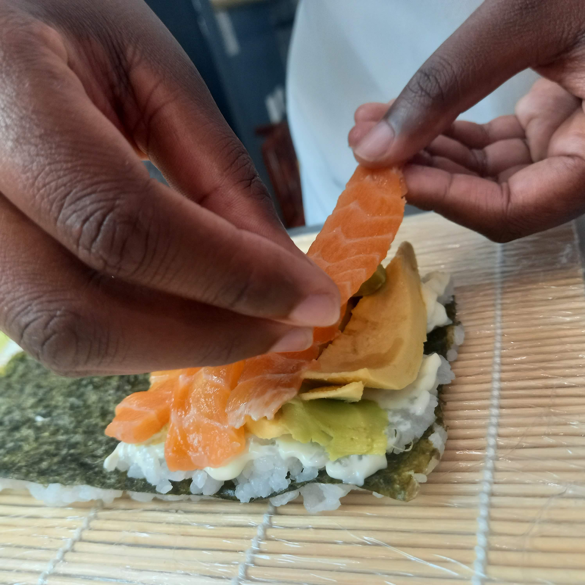
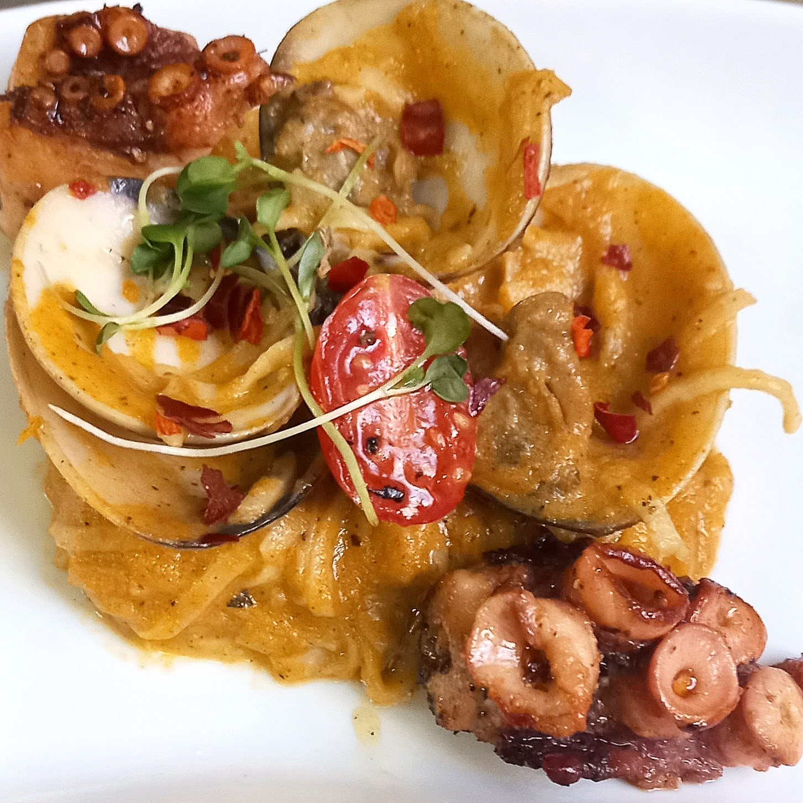
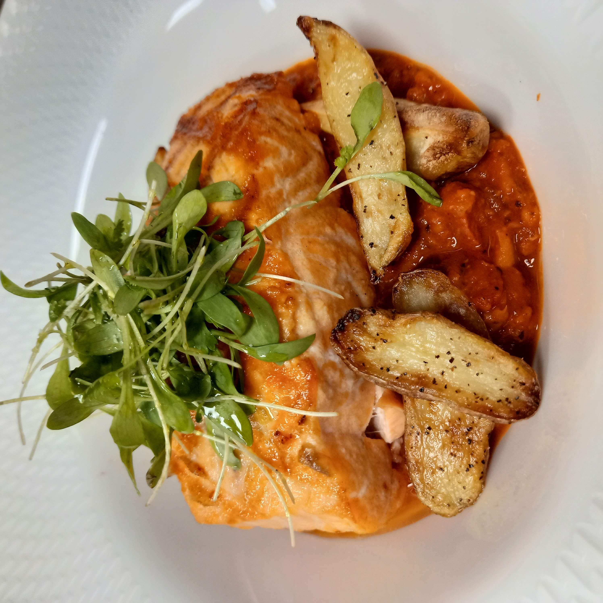

About Chef Nozy
Background of Chef Nozy.
I am a dedicated and qualified culinary professional with a Diploma in Culinary Arts obtained from Johannesburg Culinary & Pastry School. I have a growing interest in designing personalised dining experiences.

Having worked with a variety of dishes in fast paced kitchen environments, I have gained strong skills in food presentation, flavour balance and attention to detail. As time has progressed, these qualities have been developed into a more intimate process of food preparation with an emphasis not only on the food, but also on the overall dining experience for clients.
The shift from commercial kitchens to personal chef services was driven by the need to gain a greater level of creativity and establish meaningful relationships with the clients through food.
Culinary Philosophy

Food is regarded as an art and a means of uniting people with Chef Nozy.
The culinary approach is built around:
- Fresh and quality ingredients that complement the natural flavours.
- Minimalistic yet elegant presentation that feels refined and effortless.
- Customisation: Each menu is based on the preferences of the client.
Instead of a one size fits all menu, all the experiences are planned to fit the occasion, the mood and the people concerned.
Brand Story

Chef Nozy began with a very simple idea: food must be personal.
Having received some experience within the culinary space, it became obvious that most of the dining experiences were standardised and did not include the personal touch. This motivated the birth of a brand that aimed at delivering something unique: a more customised and personalised approach to food and service.
What started as a love of cooking slowly evolved into a service that is dedicated to moments. It could be a small dinner, some celebration or any personal gathering, but the goal is always the same: to make the event look special and memorable.
The brand is still expanding, basing its operations on quality, creativity and establishing longterm relationships with clients.